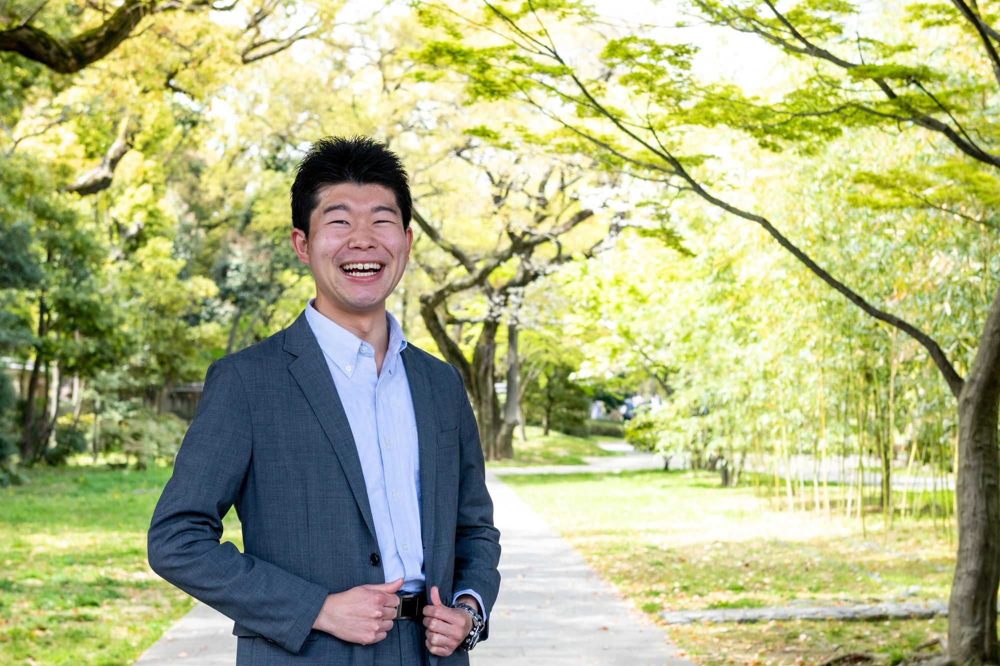

Yusuke Kido / 木戸祐輔

Brief Introduction / 自己紹介
1997年生まれ．福岡県久留米市出身．神奈川県横浜市在住．慶應義塾大学理工学部卒．慶應義塾大学理工学研究科修士課程在学中．専攻はロボティクス．技術とビジネスの力で医療格差を無くすべく，日々邁進している.
I was born in 1997 and raised in Kurume City, Fukuoka Prefecture, Japan. I live in Yokohama City, Kanagawa Prefecture. I received a Bachelor degree of Engineering at Faculty of Science and Technology, Keio University in March 2021. I am a 1st year student at Graduate School of Integrated Design Engineering, Keio University. I major in Robotics. I am making advances day by day in order to eliminate healthcare disparities with the power of technologies and businesses.
Current Position / 所属
慶應義塾大学理工学研究科総合デザイン工学専攻 野崎貴裕研究室 修士１年
1st year student at Takahiro Nozaki Laboratory, Graduate School of Integrated Design Engineering, Keio University, JAPAN
株式会社メプラジャパン アソシエイト＆新規事業開発担当 学生インターン
Associate and New Business Development, MEPLA Japan co., Ltd